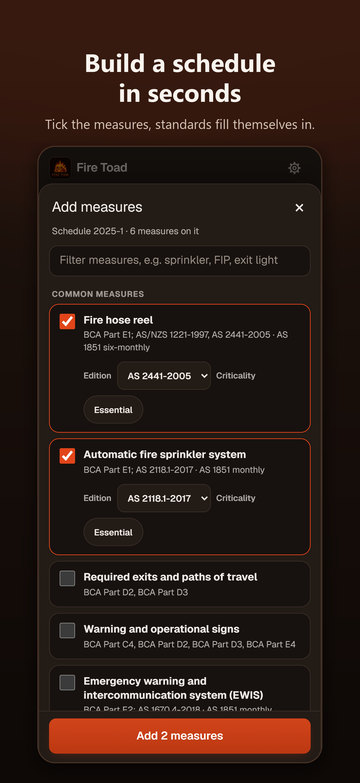
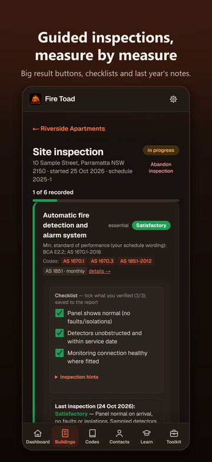
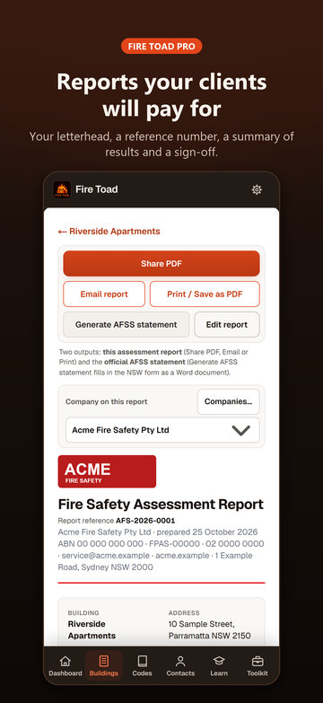

Fire safety inspections, done on site.
Fire Toad is an iPhone app for fire safety practitioners. Walk the building, record every essential measure, log defects, then hand over a clean assessment report and prepare the NSW Annual Fire Safety Statement. It all runs on your phone, with no account and no signal needed.
Free to download. Your first 3 reports include sharing, emailing, printing, your company branding and the AFSS document; after that, those need Fire Toad Pro, a monthly or yearly subscription with the same features. Recording inspections is always free. See pricing.
How it works
Three steps, from the fire safety schedule to the report in your client's inbox.
-
Set up the building once
Add the building, its BCA classes and AFSS due date, then tick its measures from a list of 30. Each one comes with its standard of performance and AS 1851 service frequency filled in.

-
Inspect measure by measure
Tick what you verified, mark each measure Satisfactory, Defect or N/A, and add notes and photos. Defects are logged as you go, and unsaved work comes back if the app closes.

-
Complete it and send the report
Completing the inspection produces the report, with a reference number and your sign-off. Share, email or print the PDF under your company's letterhead, then prepare the NSW AFSS from it.

Everything for the inspection, in one place
Built around how an Accredited Practitioner (Fire Safety) actually works a site: schedule in hand, measure by measure.
Buildings & schedules
Each building with its BCA classes, owner and current fire safety schedule. Pick each essential measure and the edition of its standard from a list, instead of typing them.
Guided site inspections
Work through every measure with a checklist of what to verify and last inspection's notes. Mark it Satisfactory, Defect or N/A, and add your own notes and photos.
Defects
Log critical and non-critical defects against a measure, add photos, and track them until they're rectified.
Assessment report
Finish the inspection and get a full Fire Safety Assessment Report: measures, results, checklists, comments, photos and defects. One tap shares it as a PDF.
NSW AFSS
A readiness check lists what stands in the way, then Fire Toad fills the official NSW fire safety statement form as a Word document. What's due tracks AFSS and supplementary statement dates.
AS 1851 logbook
Record routine service activities per measure and export the logbook as CSV.
Practitioner toolkit
Ask the standards search a question and get paraphrased requirements with clause numbers. Browse the 28 essential measures, classify defects, check AFSS readiness and test yourself with the quiz. All of it works offline.
Your data stays on your phone
No account, no cloud, no tracking. Everything is stored on your device, and one tap saves a backup file you can restore on a new phone.
Your company on your reports
Fire Toad isn't just for one business. Add your company's name, logo, ABN, licence and contact details once, and your reports carry your branding instead of ours. Company branding is part of Fire Toad Pro and is included on your first 3 reports.
- Add as many companies as you work under
- Pick the company for each report from a dropdown
- Each report remembers its company; new ones use your last pick
- Your logo prints at the top of the report and PDF
| Automatic fire detection | Satisfactory |
| Emergency lighting | Satisfactory |
| Exit signs | Defect |
| Fire hydrant system | Satisfactory |
Free to download. Pro when you send reports.
Buildings, schedules, inspections, photos, defects, report history, backups and the Toolkit are always free. Your first 3 reports include Pro.
Free A$0
Record everything, on every building. Your first 3 reports include sharing, emailing, printing, your company branding and the NSW statement document.
Pro Monthly A$19.99 a month
Share, email and print every report, the NSW AFSS Word document and your company branding. Renews monthly until you cancel.
Pro Yearly A$149.99 a year
The same features as Monthly, and saves 37% on 12 months of Monthly. Renews yearly until you cancel.
Pricing details, cancelling and FAQ → Bought Fire Toad before version 1.3? You keep Pro at no extra cost.
A record-keeping tool, not a certifier
Fire Toad helps you capture and present your own assessment. It does not assess, certify or accredit anything, and its reports are not the statutory form. Standards are cited by clause number with plain-language summaries, never reproduced. Always assess against the building's fire safety schedule and your own licensed copies of the standards. Fire Toad is not affiliated with the NSW Government or Standards Australia.